Концы нескольких линий в одну точку
qsedftghk / 19.10.2010, 15:46/00:41
Форум:
Продолжим вынос мозга тем, кто не любит читать хелп.
Допустим, нам позарез нужно вот такое произведение искусств:
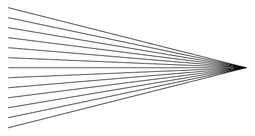
Рисуем необходимое количество линий:
Выбираем инструмент Direct Selection Tool
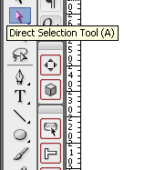
Обводим этим инструментом кончики линий как показано на рисунке
После этого, выбираем инструмент Scale Tool
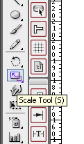
Наводим мышку на точечку, указанную на рисунке,
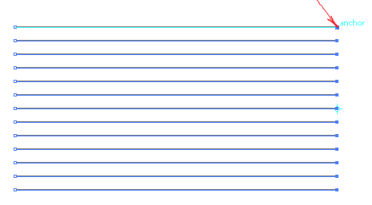
нажимаем левую кнопку мышки и не отпуская её, двигаем мышку вниз, до тех пор, пока не получите нужное
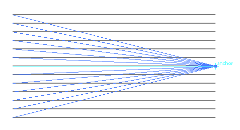
В итоге, получаем итог :D
ЗЫ. Подобным макаром, инструментом Shear tool
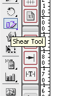
Можно получать такие вот загогулины
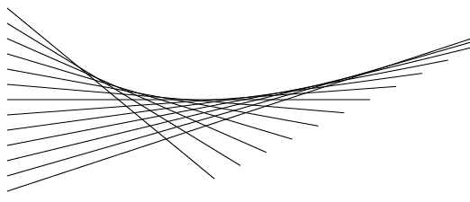
CDR про AI ;D
Это ты брат загнул,есть же стандартное действие. O_O
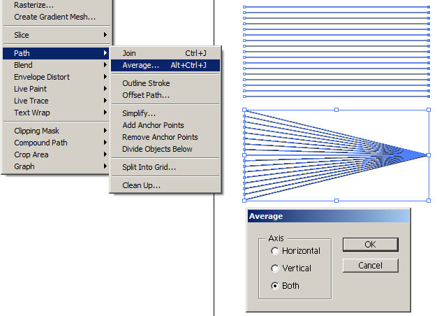
Хотя,я знаю ещё одно "черезжопное" действо.
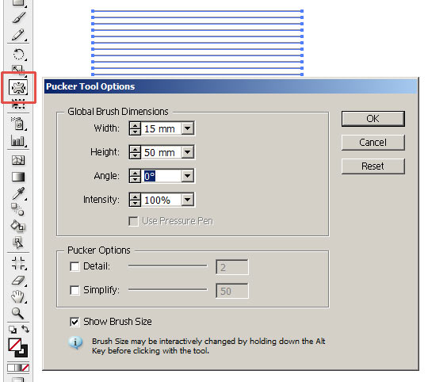
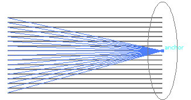
;) :P
itt, нет предела совершенству, и это не может не радовать :D
На самом деле, очень много туловищ не пользуются многими инструментами, и нужно как-то бодрить их тела, дабы они развивались. "Черезжопные" действия в люстре - это красота =)
Сомнительна эта красота ваша "черезжопная" :)
Прекратить истерику! :D
Оставь сомненья командир,иногда именно такие методы очень помогают.
Попробуй создать стандартными методами такую мешевую сетку.
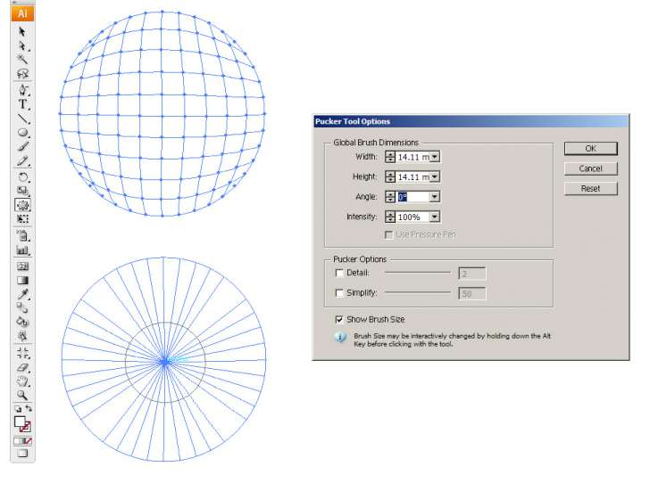
itt, я не к тому что сделать/не сделать, а к тому, что "красота" эта далеко не красота совсем. Удобство пользования в люстре хромает на обе ноги, к сожалению. Хотя вам, тем кто в проге этой как дома, это наверное не понять — привыкли ))) Даже тот же конфигуратор для люстры до сих пор не сделали, и непонятно, сделают ли для ЦС6.
Санчо, в люстре всё по феншую! гыгыгы
Кстати!